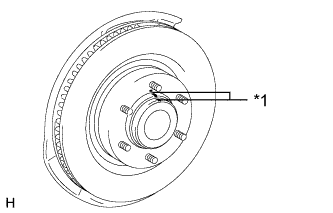

FRONT BRAKE > REMOVAL |
| 1. REMOVE FRONT WHEEL |
| 2. DRAIN BRAKE FLUID |
| 3. REMOVE FRONT DISC BRAKE PAD |
Remove the pin hold clip.
| *1 | Hole Pin |
| *2 | Pin Hold Clip |
| *3 | Anti-rattle Spring |
Remove the 2 hole pins.
 |
Remove the front disc brake anti-rattle spring.
 |
Remove the 2 front disc brake pads from the disc brake cylinder.
Remove the front No. 1 anti-squeal shims from each pad.
| 4. REMOVE DISC BRAKE CYLINDER ASSEMBLY LH |
 |
Using a union nut wrench, disconnect the brake tube from the disc brake cylinder assembly.
 |
Remove the 2 bolts and disc brake cylinder assembly.
| 5. REMOVE FRONT DISC |
|  |
Place matchmarks on the disc and axle hub if planning to reuse the disc.
| *1 | Matchmark |
Remove the front disc.